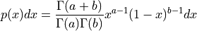
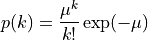

Random Number Distributions¶
This chapter describes functions for generating random variates and computing their probability distributions. Samples from the distributions described in this chapter can be obtained using any of the random number generators in the library as an underlying source of randomness.
In the simplest cases a non-uniform distribution can be obtained analytically from the uniform distribution of a random number generator by applying an appropriate transformation. This method uses one call to the random number generator. More complicated distributions are created by the “acceptance-rejection” method, which compares the desired distribution against a distribution which is similar and known analytically. This usually requires several samples from the generator.
The library also provides cumulative distribution functions and inverse cumulative distribution functions, sometimes referred to as quantile functions. The cumulative distribution functions and their inverses are computed separately for the upper and lower tails of the distribution, allowing full accuracy to be retained for small results.
- rnd.gaussian(r, sigma)¶
This function returns a Gaussian random variate, with mean zero and standard deviation ‘sigma’. The probability distribution for Gaussian random variates is,
for x in the range -∞ to +∞ . Use the transformation z = μ + x on the numbers returned by ‘gsl_ran_gaussian’ to obtain a Gaussian distribution with mean μ. This function uses the Box-Mueller algorithm which requires two calls to the random number generator R.
- rnd.exponential(r, mu)¶
This function returns a random variate from the exponential distribution with mean ‘mu’. The distribution is,
for x >= 0.
- rnd.chisq(r, nu)¶
The chi-squared distribution arises in statistics. If Yi are n independent gaussian random variates with unit variance then the sum-of-squares,
has a chi-squared distribution with n degrees of freedom.
This function returns a random variate from the chi-squared distribution with ν degrees of freedom. The distribution function is,
for x >= 0.
- rnd.laplace(r, a)¶
This function returns a random variate from the Laplace distribution with width
a. The distribution is,for -∞ < x < +∞.
- rnd.tdist(r, nu)¶
The t-distribution arises in statistics. If Y1 has a normal distribution and Y2 has a chi-squared distribution with nu degrees of freedom then the ratio,
has a t-distribution t(x; ν) with ν degrees of freedom.
This function returns a random variate from the t-distribution. The distribution function is,
for -∞ < x < +∞.
- rnd.cauchy(r, a)¶
This function returns a random variate from the Cauchy distribution with scale parameter A. The probability distribution for Cauchy random variates is,
for x in the range - ∞ to + ∞ . The Cauchy distribution is also known as the Lorentz distribution.
- rnd.rayleigh(r, sigma)¶
This function returns a random variate from the Rayleigh distribution with scale parameter σ. The distribution is,
for x > 0.
- rnd.fdist(r, nu1, nu2)¶
The F-distribution arises in statistics. If Y1 and Y2 are chi-squared deviates with ν 1 and ν2 degrees of freedom then the ratio,
has an F-distribution F(x; ν1, ν2).
This function returns a random variate from the F-distribution with degrees of freedom ν1 and ν2. The distribution function is,
for x >= 0.
- rnd.gamma(r, a, b)¶
This function returns a random variate from the gamma distribution. The distribution function is,

for x > 0.
The gamma distribution with an integer parameter a is known as the Erlang distribution. The variates are computed using the Marsaglia-Tsang fast gamma method.
- rnd.beta(r, a, b)¶
This function returns a random variate from the beta distribution. The distribution function is,

for 0 <= x <= 1.
- rnd.gaussian_tail(r, a, sigma)¶
This function provides random variates from the upper tail of a Gaussian distribution with standard deviation sigma. The values returned are larger than the lower limit a, which must be positive. The method is based on Marsaglia’s famous rectangle-wedge-tail algorithm (Ann. Math. Stat. 32, 894–899 (1961)), with this aspect explained in Knuth, v2, 3rd ed, p139,586 (exercise 11).
The probability distribution for Gaussian tail random variates is,
for x > a where N(a; σ) is the normalization constant,
- rnd.exppow(r, a, b)¶
This function returns a random variate from the exponential power distribution with scale parameter a and exponent b. The distribution is,
for x >= 0. For b = 1 this reduces to the Laplace distribution. For b = 2 it has the same form as a gaussian distribution, but with .
- rnd.lognormal(r, zeta, sigma)¶
This function returns a random variate from the lognormal distribution. The distribution function is,
for x > 0.
- rnd.binomial(r, p, n)¶
This function returns a random integer from the binomial distribution, the number of successes in n independent trials with probability p. The probability distribution for binomial variates is,
for 0 <= k <= n.
- rnd.poisson(r, mu)¶
This function returns a random integer from the Poisson distribution with mean mu. The probability distribution for Poisson variates is,

for k >= 0.